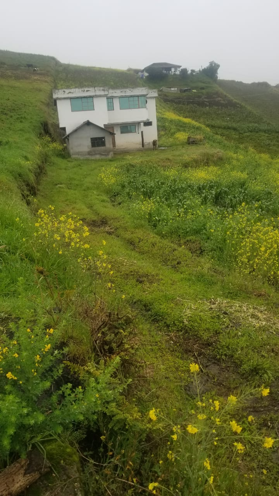
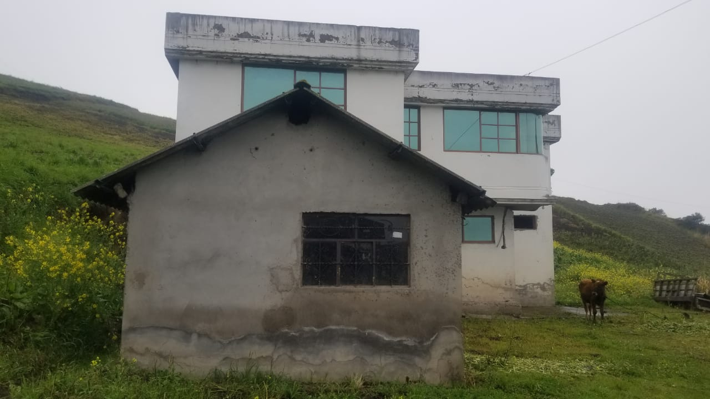
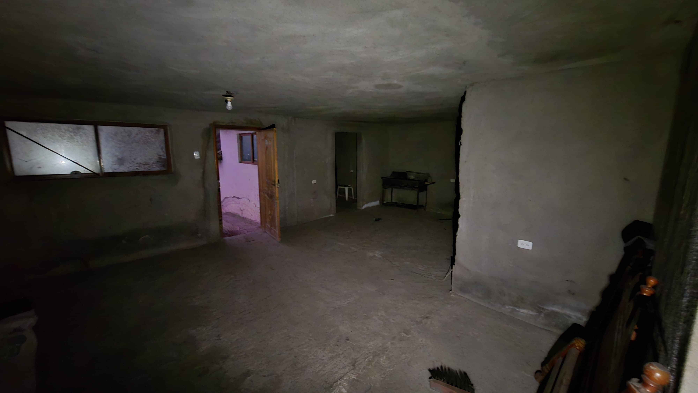

← volver al mapa
Casa - EC-RJ-155136
EC-RJ-155136 · casa · SALCEDO, Cotopaxi
★ Oferta destacada



Datos del remate
| Avalúo pericial | $30,486 |
| Tipo de bien | casa |
| Área de construcción | 166.00 m² |
| Cantón / Provincia | SALCEDO, Cotopaxi |
| Dirección / Sector | MULLIQUINDIL |
| Señalamiento | Segundo Señalamiento |
| Fecha de remate | 2026-09-09 |
| No. de proceso | 05333202101602 |
Análisis vs. mercado
| Avalúo por m² | $184/m² |
| Mediana de mercado en la zona | $558/m² |
| Descuento vs. mercado | 67.1% |
| Comparables usados | 27 |
| Radio de búsqueda | 2000 m |
| Puntaje | 92/100 |
Descripción completa del avalúo
la propiedad se trata de un lote de terreno rural de forma y topografía regular con una pendiente de 12.76% aproximadamente, de uso agrícola y residencial sobre el cual existen dos bloques de construcción de tipo civil. con un área de construcción de 166,00 m2 destinados uno a la vivienda detallados de la siguiente manera:bloque 1: vivienda de dos plantas arquitectónicas compuesta por tres dormitorios, un baño, sala, comedor y cocina.bloque 2: construcción de planta baja compuesta por un solo ambiente sin habitar.
Análisis de inversión (IA)
★ Buena oportunidadUn descuento del 67% sobre la mediana de mercado con 27 comparables es una señal fuerte de valor potencial, especialmente para una casa en Salcedo con 166 m² de construcción. El avalúo pericial de $30,485 parece conservador y el precio resultante del remate sería notablemente bajo para la zona. Vale la pena investigar más antes de descartar.
A favor:
- Descuento del 67.1% sobre mediana de mercado es muy significativo y está respaldado por 27 comparables, lo que da solidez estadística al cálculo
- 166 m² de construcción en dos bloques es una superficie considerable para Salcedo, zona con demanda residencial y agrícola activa
- Bloque 1 tiene distribución funcional completa (3 dormitorios, baño, sala, comedor, cocina) en dos plantas, lo que facilita habitabilidad inmediata o arrendamiento
- El lote tiene uso mixto agrícola y residencial, lo que amplía las posibilidades de uso y revalorización
- Topografía regular con pendiente moderada (12.76%) no representa un obstáculo mayor para construcción o uso agrícola
En contra:
- Bloque 2 consta de un solo ambiente sin habitar, lo que sugiere construcción inconclusa o de baja calidad que requerirá inversión adicional
- El avalúo pericial de $30,485 para 166 m² en zona rural es bajo, lo que puede reflejar estado real de conservación deficiente o limitaciones del inmueble
- Al ser lote rural, puede haber restricciones de uso de suelo o limitaciones para subdivisión futura
- No se menciona acceso vial ni servicios básicos, datos críticos para determinar valor real
Riesgos a verificar:
- No se menciona si el inmueble está ocupado actualmente — en remates judiciales esto puede complicar la toma de posesión significativamente
- Pendiente del 12.76% en lote rural: verificar si existe riesgo de deslizamiento o afectación por lluvias en la zona específica
- Bloque 2 'sin habitar' puede esconder daños estructurales, humedad o construcción sin permisos municipales — requiere inspección física
- No se indica el estado de escrituras ni si el lote tiene título individualizado o forma parte de una sucesión o proindiviso
- Ausencia total de información sobre gravámenes, hipotecas previas o deudas de impuestos prediales — dato crítico a verificar en el Registro de la Propiedad
- No se especifica acceso vial ni si cuenta con servicios básicos (agua, luz, alcantarillado), lo que impacta directamente el valor y usabilidad
- La descripción como 'lote rural' puede implicar limitaciones legales para construir o ampliar bajo normativa del GAD de Salcedo
Generado por IA a partir de la descripción — no es asesoría legal ni financiera.
Esta ficha es una copia de lo publicado en el sitio oficial de remates
judiciales de la Función Judicial del Ecuador, para consulta — no
reemplaza el expediente judicial. remates.funcionjudicial.gob.ec no da
un link propio por remate, por eso se generó esta página aparte.
Antes de ofertar, el expediente debe revisarlo un abogado.